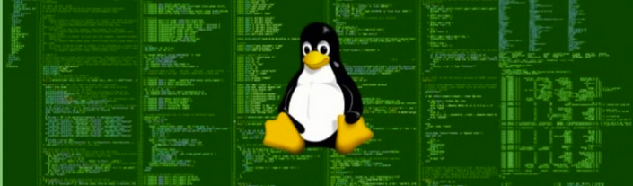

Linux Anti Ransomware
El siguiente, más que un manual paso a paso, son los comandos utilizados en el video para preparar una instalación de Debian con el sistema de archivos BTRFS.
22 September 2022

Video de Referencia en Ethergroup: https://www.facebook.com/100063979955669/videos/753610122236359
El siguiente, más que un manual paso a paso, son los comandos utilizados en el video para preparar una instalación de Debian con el sistema de archivos BTRFS. Esto nos servirá para volver de un ransomware en nuestras carpetas compartidas o simplemente para recuperar archivos borrados de nuestro servidor. De igual forma utilizaremos la herramienta Timeshift para manejar de forma más eficiente las copias y snapshots del sistema.
- Creamos una máquina virtual con Debian
- Vamos a avanzado y con las opciones avanzadas entramos al menú de experto.
- Configuramos cada una de las partes a utilizar
- En particiones, escogemos manual.
Creamos 3 particiones:
1 - Efi de 600 mb
1 - swap de 3 GB
1 - con el resto sobre btrfs
- Luego de ello mandaremos el comando ctrl + alt + f2 -> Esto para acceder a una shell
Dentro de busybox, haremos lo siguiente:
Buscamos lo que contenga el sistema target
df
Desmontamos
umount /target/boot/efi
umount /target
Ahora montaremos la información sobre mnt:
mount /dev/sda3 /mnt -> se monta la que tiene el indicador target
Luego entraremos a mnt para poder crear nuestros subvolumes:
cd /mnt btrfs subvolume create @ -> se llama de esa forma porque es la manera de llamar a la base
btrfs subvolume create @home
btrfs subvolume create @snapshots
btrfs subvolume list
Ahora realizaremos lo siguiente:
mount -o rw,noatime,compress=lzo,space_cache,subvolid=257,subvol=@ /dev/sda3 /target
Crearemos los directorios para montar los directorios:
mkdir -p /target/home
mkdir -p /target/.snapshots
mount -o rw,noatime,compress=lzo,space_cache,subvolid=258,subvol=@ /dev/sda3 /target/home
mount -o rw,noatime,compress=lzo,space_cache,subvolid=259,subvol=@ /dev/sda3 /target/.snapshots
ls
Ahora hay que mover la información al volumen de target:
mv etc/ /target/
mv media /target/
Veremos la carpeta boot, pero a este punto está vacía. Aprovechando esto, crearemos boot/efi dentro de la carpeta target:
mkdir -p /target/boot/efi
Montamos la partición que contendrá el EFI dentro del sistema:
mount /dev/sda1 /target/boot/efi/
Finalmente desmontamos /mnt
umount /mnt
Ahora que tenemos eso, verificamos que todo esté en /target/
boot etc home media
Es hora de modificar el archivo de fstab que contiene información vieja:
cd etc
nano fstab
Utilizando el mismo UUID del disco, haremos lo siguiente:
UUID=cnadscb4brjhb3jhbj/
btrfsrw,noatime,compress=lzo,space_cache,subvolid=257,subvol=@ 0 0
UUID=cnadscb4brjhb3jhbj /home btrfs rw,noatime,compress=lzo,space_cache,subvolid=258,subvol=@home 0 0
UUID=cnadscb4brjhb3jhbj /.snapshots btrfs
rw,noatime,compress=lzo,space_cache,subvolid=259,subvol=@snapshots 0 0
Para salir de la consola tecleamos ctrl + D y regresamos al menú de configuración:
- Realizaremos la instalación del entorno de escritorio para hacer uso de una herramienta llamada timeshift.
Instalamos un escritorio sencillo.
Luego de que el sistema cargue completamente, iremos a los archivos de apt sources y comentaremos la linea de cdrom.
Haremos un update:
apt-get update
Instalamos:
apt-get install git vim timeshift
A modo de ejemplo, crearemos un snapshot con btrfs:
sudo btrfs subvolume snapshot / /.snapshots/unnombreofecha-root-snapshot
sudo btrfs subvolume list /
La aplicación de timeshift es bastante intuitiva y nos permitirá regresar a snapshots parciales o totales del sistema.
¡Happy Hacking!